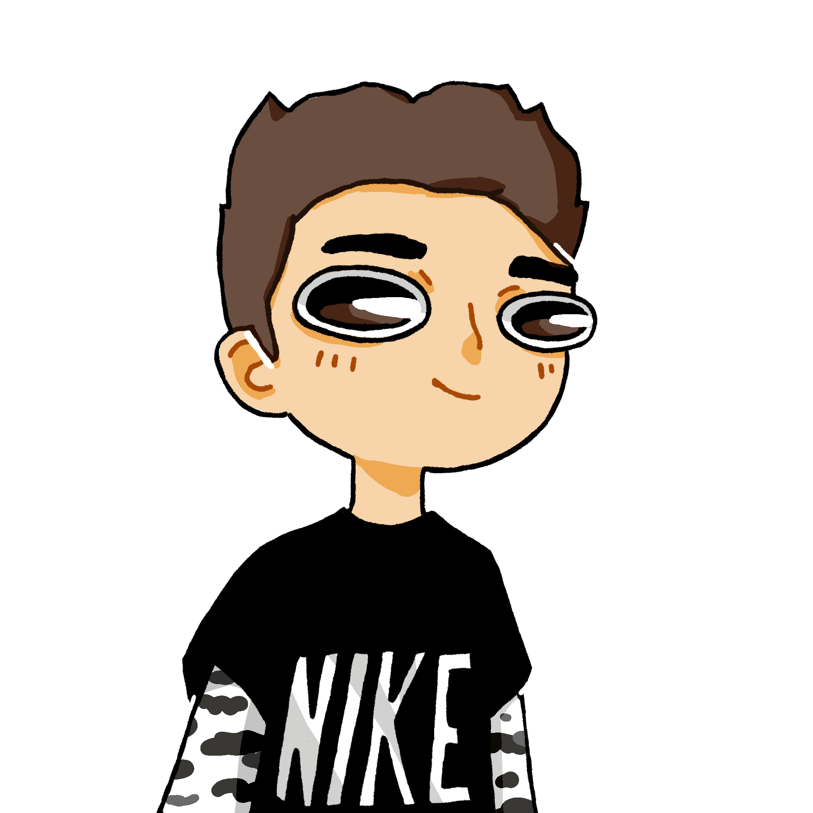

Je fais une pause pour remettre de l’essence, attendez 5 minutes. Bonjour monsi… Camille ??
 Bah écoute, ça arrondit les fins de mois ! D’ailleurs, puisque vous êtes là, il fallait que je vous parle du projet de SI ! Parce que j’ai fini mes calculs, et en fait j’ai trouv…
Bah écoute, ça arrondit les fins de mois ! D’ailleurs, puisque vous êtes là, il fallait que je vous parle du projet de SI ! Parce que j’ai fini mes calculs, et en fait j’ai trouv…
Oui, c’est très bien, mais là tu vois on enquête sur une disparition, donc je pense qu’on pourrait mettre le travail scolaire de côté un week-end, et se pencher sur la potentielle fin du monde annoncée lors d’un jeu sexuel douteux.
Eh bien…. Non.
Ok, bah salut moi j’y vais.
Eh ! Attends, tu n’as…
Samy parti à toute allure, en direction des routes sinueuses de campagne, laissant derrière lui le futur licencié.
…pas payé.
---------------------------------------------------------------------------------------
TOC TOC TOC
 Oui ?
Ouvre c’est Samy !
 T’es obligé de recycler tes phrases ?
T’es obligé de recycler tes phrases ?
T’es obligé de casser les couilles ?
Samy n’eut pas le temps de se rendre compte de la violence de ses propos, que la porte s’ouvrit.
Qu’est-ce que vous faites là ?
On a besoin de toi pour retrouver Léopold ! Et pas la peine de faire « Gneugneu je sais pas, j’ai rien à voir avec ça » !
Calme-toi Ivan, je savais très bien que tu allais venir, et j’ai des instructions pour toi. Par contre Samy et… toi vous pouvez partir, j’ai rien pour vous.
C’est une blague ? Je me suis pas cassé le cul à voyager à travers toute la Seine-et-Marne pour avoir un bisou sur la joue à la fin ! J’ai pris un gode dans le cul merde !
Et t’as aimé ?
Au fond, c’était assez agréable au début, mais y a eu ce moment où elle a commencé à mettre… Attends, pourquoi tu me demandes ça ??
Juste pour savoir… Bref Ivan, viens là. Vois-tu, il existe deux types de personnes sur Terre. Ceux qui ne jurent que par l’IRL, et ceux qui vouent un culte aux hentais.
Logique, mais quel rapport avec Léopold ?
Attends ! J’y arrive… Un jour, la majorité des gens décidèrent que le hentai était réservé à un peuple de sous-races, et ils ont commencé à opprimer ceux qui en consommait régulièrement. C’est alors que sorti de nulle part, un homme s’est levé ! Il décida de fonder un parti politique virtuel, à l’aide de quelques collègues, afin de redorer le blason du hentai. Seulement, son projet prit plus d’ampleur qu’il ne l’avait imaginé, et il décida de retourner dans l’ombre, laissant ses amis au pouvoir. C’est ainsi que fut fondé l’Amlaetxhis. Évidemment, pour contrer l’influence du hentai, un contre-pouvoir fut créé : le Sophisme. Ce mouvement avait pour but de promouvoir les relations réelles, afin d’éviter que la population mondiale se transforme en otaku nolife.
Ça n’a aucun sens.
J’avoue on s’en tape ! Quel rapport avec Léopold ?
Vous n’avez toujours pas compris ? Léopold est l’empereur du Sophisme. S’il a été rappelé, c’est qu’une grande guerre se prépare.
Mais pourquoi on nous a rien dit ? Tout le monde a l’air au courant, et nous on est mis à l’écart !
C’est tout simplement pour te protéger Ivan. Et tu n’avais rien remarqué ? A ton avis, pourquoi il n’arrêtait pas de crier « SOPHIE » ? Mais maintenant que tu sais tout, tu vas devoir choisir un camp, et nous connaissons tous ton goût prononcé pour le furry…
Hey !
Or, Léopold ne pouvait pas se résilier à se battre contre toi. Il a donc préféré te laisser dans l’ignorance.
Ivan était troublé. Léopold aurait fait tout ça uniquement pour le protéger ? Juste parce qu’ils étaient amis ? Pourtant, il en avait plein d’autres, des amis ; alors pourquoi tenter de le protéger lui, peu importe l’énergie qu’il y mettait ?
Attends une minute, pourquoi on m’a rien dit à moi non plus ?
Parce qu’au mieux tu n’aurais rien compris, et au pire tu lui aurais tout dit. On n’a pas voulu prendre de risque.
J’ai comme l’impression d’être pris pour un con…
Il ne put s’empêcher de repenser à Ambra. Elle lui a donné des informations pour le guider, malgré les interdictions. Pourquoi a-t-elle pris de tels risques, sachant que Léopold n’est pas en danger ?
Bon peu importe, je dois parler à Léopold ! Est-ce qu’il y a un QG du Sophisme, ou un truc dans le genre ?
Oui, et sache que malgré tout, Léopold te l’a toujours indiqué…
Ah bon ?!
Souviens toi… Le Sophisme trouve ses racines dans…
L’aviation ! Mondialisation !
Pour la première fois, Ivan trouva la réponse qu’il cherchait avant Samy.
Samy ! Où est le pôle de mondialisation en rapport avec l’aviation le plus proche ?
Heu… L’aéroport Charles De Gaulle probablement.
Ok ! C’est parti !
Hé ! 2 minutes ! Déjà vous alliez oublier votre gamine, et ensuite, Samy, j’ai une petite surprise pour toi !
Ils sortirent de la maison, pour atteindre le garage. À l’intérieur se trouvait une magnifique Kawasaki H2 toute neuve.
Elle devait être à mon frère mais il est mort lol.
Samy avait les larmes aux yeux, et bandait sec devant ce bijou de technologie.
Ci… Cimer chef !
Par contre, y’a pas la place pour Xydoé…
Pas grave, elle va rester avec moi, elle risque rien ici. Allez-y, vous avez déjà perdu assez de temps.
Ok ! Squalala ! Nous sommes partis !